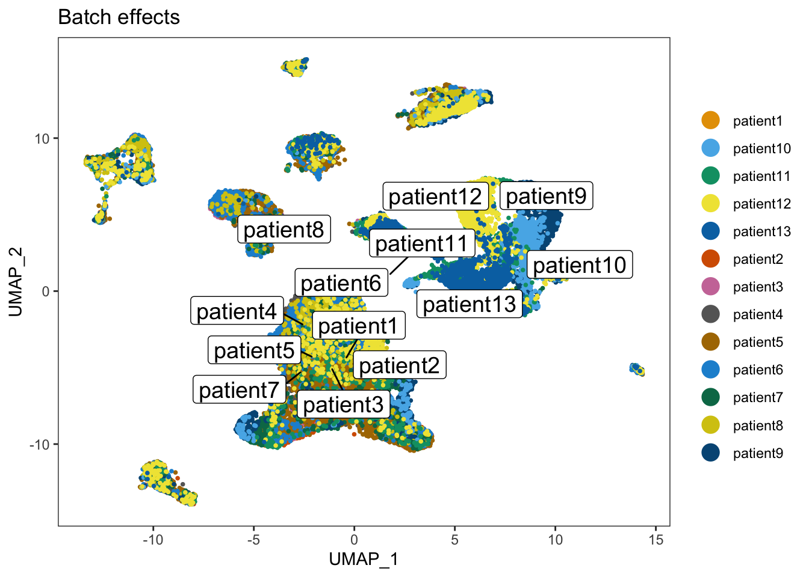
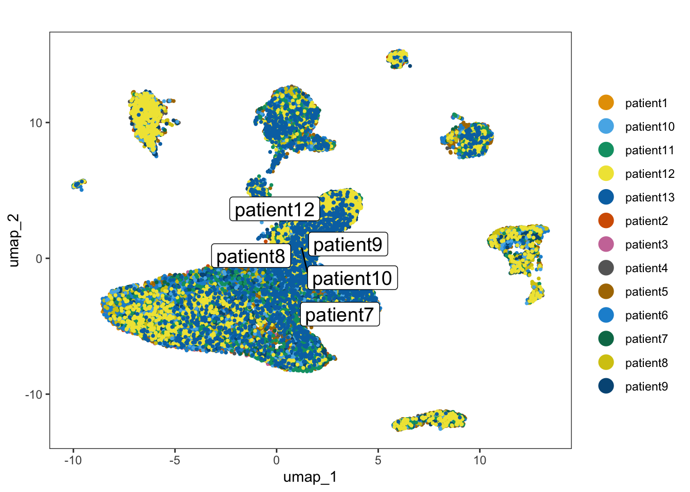
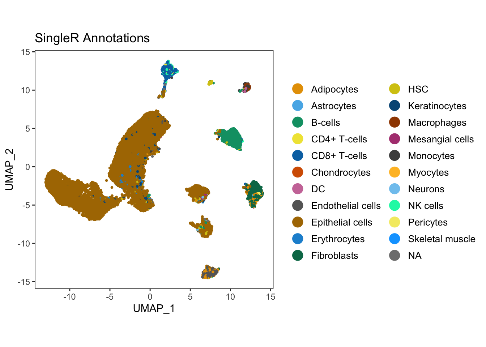
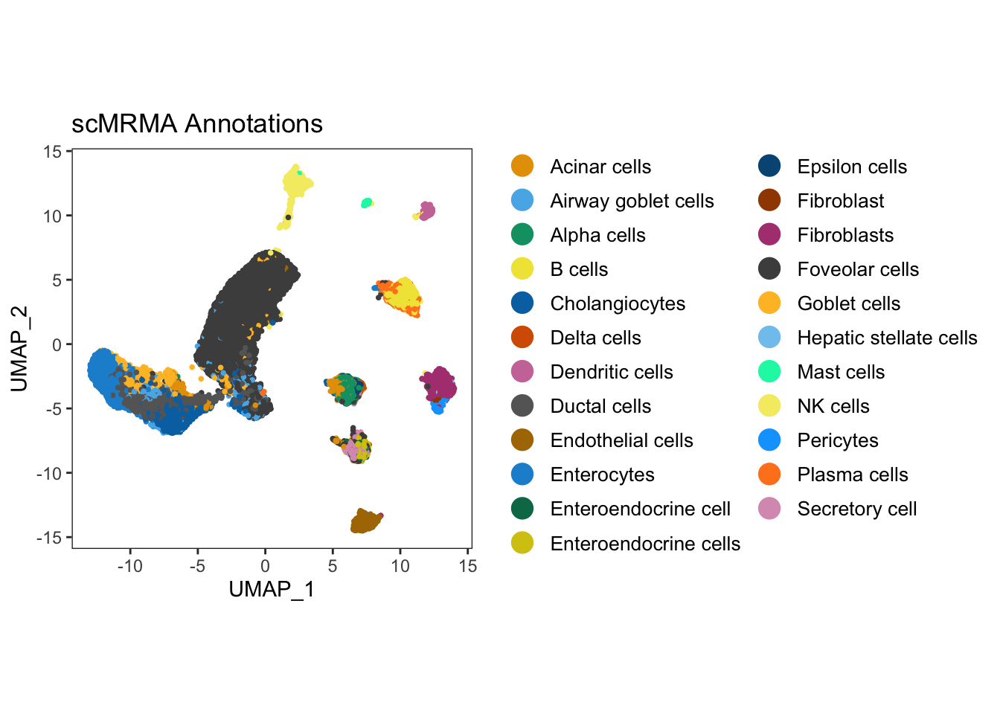
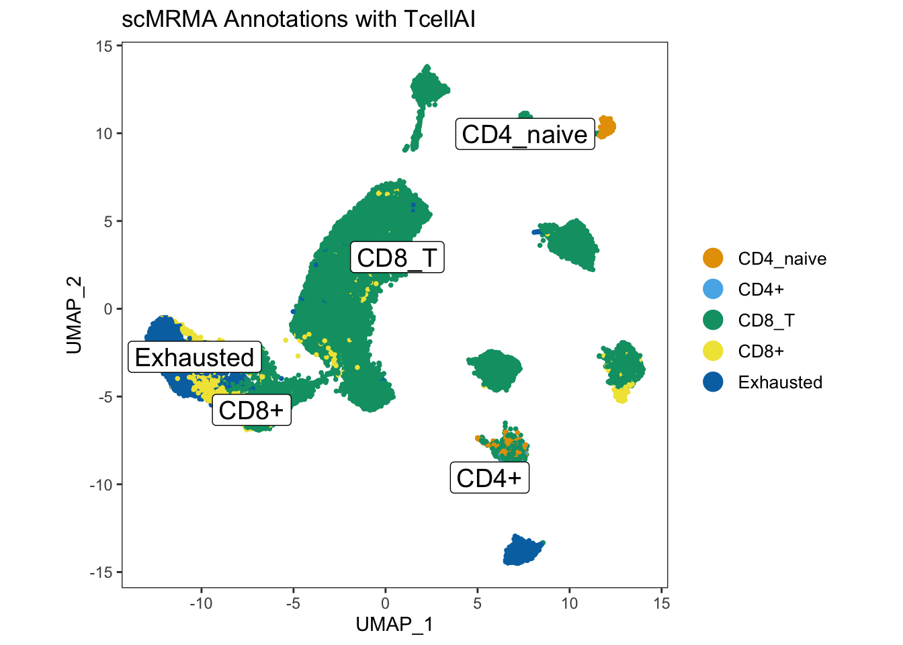

Immune cell profiling from single cell RNA with R
Team: Meghana Kshirsagar, Gauri Vaidya and Yang Ye
April 21, 2023
Abstract
Over the past couple of decades, immunotherapy treatments have been widely adopted as an alternative treatment for a variety of cancers. The study of tumour microenvironment of immune cells such as macrophages, T cells and B cells amongst others can help to unravel the mystery of differential outcomes to immunotherapy treatments. Gene expression profiling can help to identify the patterns of genes expressed in major immune cells amongst cohorts of patients at different stages of cancer to generate new biological hypotheses. Statistical approaches can facilitate the identification of highly variable genes and their expression in immune cells by performing analysis of scRNA sequencing data. The tutorial will be divided in three parts; comparing the popular annotation tools, applying dimensionality reduction techniques to obtain multi-stage downstreaming of scRNA data and extracting crucial insights from immune cell populations and subpopulations. Throughout the tutorial we will follow the seurat pipeline version 4.0.Introduction
In this tutorial, we perform comparative analysis of different annotation tools for scRNA-seq data. The annotation tools are compared on the basis of their ability to correctly label the celltypes and the respective marker genes. We demonstrate the workflow using gastric cancer dataset throughout the tutorial. The source code is available at GitHub.
Objective
To design Allele (¨A¨nnotation too¨l¨s for sing¨l¨e c¨e¨ll know¨l¨edgebase cr¨e¨ation), an artificial intelligence driven knowledge graph to reveal novel patterns by mining big data. Allele in its initial phase has been tested using cypher queries fired on knowledge graph to discover related entities and their properties.
Load libraries
Install the relevant R libraries
library(Seurat)
library(tidyverse)
library(ggplot2)
library(scCustomize)
library(gridExtra)
library(DESeq2)
library(celldex)
library(ggpubr)
library(SingleR)
library(scMRMA)
library(SeuratWrappers)
library(Nebulosa)
library(dittoSeq)
library(harmony)
library(cowplot)
library(viridis)
library(scuttle)
library(trqwe)
set.seed(1000)Load Dataset
We will use throughout this vignette, publicly available single-cell RNA-seq dataset provided by Zhang et al.. The dataset is available in the Gene Expression Omnibus with Accession Number GSE134520.
In this study, 13 samples of patients diagnosed with gastritis, intestinal metaplasia or early gastric cancer are provided. All the samples are merged together into a Seurat object and it can be downloaded from here.
merged_seurat <- readRDS('gastric_dataset.rds')Quality Control and Filtering
We will follow the recommendations for quality control and filtering parameters as mentioned by Zhang et. al.
# get row names of the seurat object
merged_seurat$sample <- rownames(merged_seurat@meta.data)
merged_seurat@meta.data <- separate(merged_seurat@meta.data, col = 'sample', into = c('Patient', 'Barcode'), sep = '__')
# specify patient and type of diagnosis
Patient = c("patient1", "patient2", "patient3",
"patient4", "patient5", "patient6" , "patient7",
"patient8", "patient9", "patient10",
"patient11", "patient12", "patient13")
values <- c("NAG", "NAG", "NAG", "CAG", "CAG", "CAG", "IMW", "IMW", "IMS", "IMS", "IMS", "IMS", "EGC")# add column in seurat object to specify the type of the patient
merged_seurat$type <- values[match(merged_seurat$Patient, Patient)]
# calculate the percentage of mitochondrial and ribosomal genes
merged_seurat$mitoPercent <- PercentageFeatureSet(merged_seurat, pattern="^MT-")
merged_seurat$riboPercent <- PercentageFeatureSet(merged_seurat, pattern="^RPL")# filter the object
merged_seurat_filtered <- subset(merged_seurat, subset = nFeature_RNA > 400 & nFeature_RNA < 7000 & mitoPercent < 20 & riboPercent < 20)
merged_mnn <- merged_seurat_filteredData processing and normalization of the gene expression matrix using Seurat pipeline
In this section, we pretty much follow the vignette from Seurat for the preprocessing of the scRNA We perform a standard scRNA-seq normalization and processing: 1. NormalizeData 2. FindVariableFeatures 3. ScaleData 4. RunPCA 5. RunUMAP
We perform library size normalization by rescaling counts to a common library size of 10000.
merged_unprocessed <- merged_seurat_filtered
merged_seurat_filtered <- NormalizeData(object = merged_seurat_filtered, normalization.method = "LogNormalize", scale.factor = 10000)
merged_seurat_filtered <- FindVariableFeatures(object = merged_seurat_filtered, mean.function = ExpMean, dispersion.function = LogVMR,x.low.cutoff = 0.05, x.high.cutoff = 5, y.cutoff = 0.5, do.plot = T)
merged_seurat_filtered <- ScaleData(merged_seurat_filtered)## Centering and scaling data matrixmerged_seurat_filtered <- RunPCA(merged_seurat_filtered, verbose = FALSE)
merged_seurat_filtered <- RunUMAP(merged_seurat_filtered, dims = 1:20, reduction.name ="UMAP_BatchEffect_Uncorrected")## 18:54:43 UMAP embedding parameters a = 0.9922 b = 1.112## 18:54:43 Read 32307 rows and found 20 numeric columns## 18:54:43 Using Annoy for neighbor search, n_neighbors = 30## 18:54:43 Building Annoy index with metric = cosine, n_trees = 50## 0% 10 20 30 40 50 60 70 80 90 100%## [----|----|----|----|----|----|----|----|----|----|## **************************************************|
## 18:54:45 Writing NN index file to temp file /var/folders/mz/1vyj5rj15szdy7q3090wg_q40000gn/T//Rtmp7nJM25/file13a824754686
## 18:54:45 Searching Annoy index using 1 thread, search_k = 3000
## 18:54:53 Annoy recall = 100%
## 18:54:54 Commencing smooth kNN distance calibration using 1 thread with target n_neighbors = 30
## 18:54:55 Initializing from normalized Laplacian + noise (using irlba)
## 18:54:58 Commencing optimization for 200 epochs, with 1409320 positive edges
## 18:55:12 Optimization finishedUMAP with batch effects
dittoDimPlot(merged_seurat_filtered, var="Patient", reduction.use = "UMAP_BatchEffect_Uncorrected", do.label = TRUE) + ggtitle("Batch effects")
Approach 1: Batch correction using Harmony
# Library-size normalization, log-transformation, and centering and scaling of gene expression values
merged_harmony <- merged_unprocessed
merged_seurat_filtered <- NormalizeData(object = merged_seurat_filtered, normalization.method = "LogNormalize", scale.factor = 10000)
merged_seurat_filtered <- FindVariableFeatures(object = merged_seurat_filtered, mean.function = ExpMean, dispersion.function = LogVMR,x.low.cutoff = 0.05, x.high.cutoff = 5, y.cutoff = 0.5, do.plot = T)
merged_seurat_filtered <- ScaleData(merged_seurat_filtered)## Centering and scaling data matrixmerged_seurat_filtered <- RunPCA(merged_seurat_filtered, verbose = FALSE)
merged_seurat_filtered <- RunHarmony(merged_seurat_filtered, group.by.vars = "Patient")## Harmony 1/10## Harmony 2/10## Harmony 3/10## Harmony converged after 3 iterationsmerged_seurat_filtered <- RunUMAP(merged_seurat_filtered, reduction = "harmony", dims = 1:20)## 18:56:33 UMAP embedding parameters a = 0.9922 b = 1.112## 18:56:33 Read 32307 rows and found 20 numeric columns## 18:56:33 Using Annoy for neighbor search, n_neighbors = 30## 18:56:33 Building Annoy index with metric = cosine, n_trees = 50## 0% 10 20 30 40 50 60 70 80 90 100%## [----|----|----|----|----|----|----|----|----|----|## **************************************************|
## 18:56:35 Writing NN index file to temp file /var/folders/mz/1vyj5rj15szdy7q3090wg_q40000gn/T//Rtmp7nJM25/file13a823ff32a2a
## 18:56:35 Searching Annoy index using 1 thread, search_k = 3000
## 18:56:43 Annoy recall = 100%
## 18:56:44 Commencing smooth kNN distance calibration using 1 thread with target n_neighbors = 30
## 18:56:45 Initializing from normalized Laplacian + noise (using irlba)
## 18:56:47 Commencing optimization for 200 epochs, with 1448710 positive edges
## 18:57:02 Optimization finisheddittoDimPlot(merged_seurat_filtered, "Patient", do.label = TRUE) + ggtitle(" ")
Approach 2: Batch correction using MNN
merged_mnn <- merged_unprocessed
merged_mnn <- NormalizeData(object = merged_mnn, normalization.method = "LogNormalize", scale.factor = 10000)
merged_mnn <- FindVariableFeatures(object = merged_mnn, mean.function = ExpMean, dispersion.function = LogVMR,x.low.cutoff = 0.05, x.high.cutoff = 5, y.cutoff = 0.5, do.plot = T)
merged_seurat_filtered_mnn <- RunFastMNN(object.list = SplitObject(merged_mnn, split.by = "Patient"))## Computing 2000 integration featuresmerged_seurat_filtered_mnn <- RunUMAP(merged_seurat_filtered_mnn, reduction = "mnn", dims = 1:20, reduction.name = "UMAP_mnnCorrected")## 18:57:54 UMAP embedding parameters a = 0.9922 b = 1.112## 18:57:54 Read 32307 rows and found 20 numeric columns## 18:57:54 Using Annoy for neighbor search, n_neighbors = 30## 18:57:54 Building Annoy index with metric = cosine, n_trees = 50## 0% 10 20 30 40 50 60 70 80 90 100%## [----|----|----|----|----|----|----|----|----|----|## **************************************************|
## 18:57:56 Writing NN index file to temp file /var/folders/mz/1vyj5rj15szdy7q3090wg_q40000gn/T//Rtmp7nJM25/file13a8232fda2cc
## 18:57:56 Searching Annoy index using 1 thread, search_k = 3000
## 18:58:04 Annoy recall = 100%
## 18:58:05 Commencing smooth kNN distance calibration using 1 thread with target n_neighbors = 30
## 18:58:06 Initializing from normalized Laplacian + noise (using irlba)
## 18:58:09 Commencing optimization for 200 epochs, with 1455768 positive edges
## 18:58:24 Optimization finishedmerged_seurat_filtered_mnn <- FindNeighbors(merged_seurat_filtered_mnn, reduction = "mnn", dims = 1:20)## Computing nearest neighbor graph
## Computing SNNmerged_seurat_filtered_mnn <- FindClusters(merged_seurat_filtered_mnn)
dittoDimPlot(merged_seurat_filtered_mnn, "Patient", , reduction.use = "UMAP_mnnCorrected", do.label = TRUE) + ggtitle("Batch correction using MNN")
p1 <- dittoDimPlot(merged_seurat_filtered, var = "Patient",
reduction.use = "UMAP_BatchEffect_Uncorrected", size = 0.2) +
ggtitle("Patient ID on UMAP before correction")
p2 <- dittoDimPlot(merged_seurat_filtered_mnn, var = "Patient",
reduction.use = "UMAP_mnnCorrected", size = 0.2) +
ggtitle("Patient ID on UMAP after correction")
plot_grid(p1, p2)
Cell Type Annotations
scRNA-Seq data can be annotated using two techniques: (1) manual annotation by domain experts, or (2) automated annotation using transcriptomics profiles to assign cell identities. In this tutorial, we compare the pros and cons of each of the approaches. Hence, we choose automated annotation tools such as scMRMA (Marker Gene Database Based in R), SCSA (Marker Gene Database Based in Python) and SingleR (Correlation Based in R).
Exploring annotation tools
Method 1: Annotation with SingleR
We will now annotate the clusters with SingleR, which is an annotation tool combined with Seurat, to explore scRNA-seq data. It is available to be downloaded from Bioconductor. SingleR uses a reference dataset of scRNA-seq data with known labels, it labels new cells from a test dataset based on similarity to the reference. We used the reference database, Blueprint/ENCODE consisting of bulk RNA-seq data for pure stroma and immune cells generated by Blueprint Martens and Stunnenberg 2013 and ENCODE projects The ENCODE Project Consortium 2012.
seurat.singleR <- merged_seurat_filtered_mnn
# load the BlueprintEncodeData
dataset.ref <- BlueprintEncodeData()
# convert the seurat object to SingleCellExperiment object
seurat.singleR.sce <- as.SingleCellExperiment(seurat.singleR)
# annotate the dataset with SingleR
singleR.labels <- SingleR(test = seurat.singleR.sce ,assay.type.test = 1, ref = dataset.ref, labels = dataset.ref$label.main)
# add column in the main dataset with the annotated labels
seurat.singleR@meta.data$singleR.labels <- singleR.labels$pruned.labels
# change the index of the object to the annotated labels
seurat.singleR <- SetIdent(seurat.singleR, value = "singleR.labels")
# find all the markers with the annotations with minimum log2foldchange of 2 and minimum percentage cells as 50%
all.cluster.markers <- FindAllMarkers(seurat.singleR, logfc.threshold = log2(1.2), min.pct = 0.5)
# export the labelled annotations to csv
write.csv(all.cluster.markers, "ISCBgastric_singleR_labels_mnn.csv")UMAP_singleR <- dittoDimPlot(seurat.singleR, reduction.use = 'UMAP_mnnCorrected', var = 'singleR.labels') + ggtitle("SingleR Annotations") + theme(legend.text = element_text(size = 10), aspect.ratio = 1)
ggarrange(UMAP_singleR) #### Method 2: Annotation with scMRMA The final annotation tool that we will discuss in our tutorial is scMRMA, ‘single cell Multiresolution Marker-based Annotation’ algorithm, which is a bidirectional method that maps cell clusters against a hierarchical reference by Li et. al. scMRMA uses a reference database, PanglaoDB, with lists of cell-type markers for various tissue types for both human and mouse, which makes it possible to explore cell types with a list of marker genes. Furthermore, it also uses another database, TcellAI containing 22 subcelltypes of T-cells. TcellAI is a part of ImmuCellAI, which was originally collected for cancer immune cells Miao et. al. Therefore, TcellAI is very useful for annotating specific T-cell populations in cancer. In addition, scMRMA accepts user-defined references as well making it a popular choice to be investigated for automated celltype annotation.
merged_seurat_scMRMA <- merged_seurat_filtered_mnn
result <- scMRMA(input = merged_seurat_scMRMA,
species = "Hs",
db = "panglaodb",
p = 0.05,
normalizedData = F,
selfDB = NULL,
selfClusters = NULL,
k=20)
merged_seurat_scMRMA[["scMRMA"]] <- result$multiR$annotationResult[colnames(merged_seurat_scMRMA),ncol(result$multiR$annotationResult)]UMAP_scMRMA <- dittoDimPlot(merged_seurat_scMRMA,reduction.use = "UMAP_mnnCorrected",var = "scMRMA")+ ggtitle("scMRMA Annotations") + theme(legend.text = element_text(size = 10), aspect.ratio = 1)
ggarrange(UMAP_scMRMA)
result <- scMRMA(input = merged_seurat_scMRMA,
species = "Hs",
db = "TcellAI",
p = 0.05,
normalizedData = F,
selfDB = NULL,
selfClusters = NULL,
k=20)
merged_seurat_scMRMA[["scMRMA_TcellAI"]] <- result$multiR$annotationResult[colnames(merged_seurat_scMRMA),ncol(result$multiR$annotationResult)]UMAP_scMRMA_tcellAI <- dittoDimPlot(merged_seurat_scMRMA,reduction.use = "UMAP_mnnCorrected",var = "scMRMA_TcellAI", do.label = TRUE)+ ggtitle("scMRMA Annotations with TcellAI") + theme(legend.text = element_text(size = 10), aspect.ratio = 1)
ggarrange(UMAP_scMRMA_tcellAI)
Method 3: Annotation with SCSA
SCSA is a python based annotation tool, which annotates the cell types from scRNA-seq data, based on a score annotation model combining differentially expressed genes (DEGs) and confidence levels of cell markers from both known and user-defined information by Cao et. al. SCSA annotation can be directly applied to clustering results obtained from Seurat as well as CellRanger, making it an ideal choice for investigation in this study.
Hence, we will create a .csv file with FindAllMarkers() function and give it as an input to SCSA for annotation containing the cluster results.
# prepare data for SCSA annotation in Python
scsa <- merged_seurat_filtered_mnn
# seurat workflow
scsa <- ScaleData(object = scsa)## Centering and scaling data matrixscsa <- FindNeighbors(scsa, dims = 1:20, reduction = "mnn")## Computing nearest neighbor graph## Computing SNNscsa <- FindClusters(scsa)
scsa <- SetIdent(scsa, value="seurat_clusters")
scsa <- FindAllMarkers(scsa,logfc.threshold = log2(1.2), min.pct = 0.5)## Calculating cluster 0## Calculating cluster 1## Calculating cluster 2## Calculating cluster 3## Calculating cluster 4## Calculating cluster 5## Calculating cluster 6## Calculating cluster 7## Calculating cluster 8## Calculating cluster 9## Calculating cluster 10## Calculating cluster 11## Calculating cluster 12## Calculating cluster 13## Calculating cluster 14## Calculating cluster 15## Calculating cluster 16## Calculating cluster 17## Calculating cluster 18## Calculating cluster 19# write the results to CSV
write.csv(scsa, 'gastric_scsa.csv')import os
os.system("python3 /Users/orphic/Downloads/SCSA-master/SCSA.py -d /Users/orphic/Downloads/SCSA-master/whole.db -s seurat -i /Users/orphic/Downloads/SCSA-master/gastric_scsa.csv -k All -E -g Human -p 0.01 -f 1.5 > results.txt")The results of the annotation from SCSA are saved in your working directory in results.txt file.
Introducing Nebulosa
Nebulosa, is a R package that uses weighted kernel density estimation to recover signals lost through drop-out or low expression for immune cell types. The marker genes for immune cell types are referenced from 31067475.
Individual and joint density plots for T cells with Nebulosa.
Here, we also show an example of individual and joint density plots for T cell with Nebulosa for batch corrected seurat object.
tcell <- plot_density(seurat.singleR, c("CD2"), reduction = "UMAP_mnnCorrected") + theme(text = element_text(size = 7))
tcell + plot_layout(ncol = 1) + theme(text = element_text(size = 7)) 
tcell <- plot_density(seurat.singleR, c("CD3D"), reduction = "UMAP_mnnCorrected") + theme(text = element_text(size = 7))
tcell + plot_layout(ncol = 1) + theme(text = element_text(size = 7)) 
tcell <- plot_density(seurat.singleR, c("CD3E"), reduction = "UMAP_mnnCorrected") + theme(text = element_text(size = 7))
tcell + plot_layout(ncol = 1) + theme(text = element_text(size = 7)) 
tcell <- plot_density(seurat.singleR, c("CD3G"), reduction = "UMAP_mnnCorrected") + theme(text = element_text(size = 7))
tcell + plot_layout(ncol = 1) + theme(text = element_text(size = 7)) 
tcell <- plot_density(seurat.singleR, c("CD2", "CD3D", "CD3E", "CD3G"), joint=TRUE, combine=FALSE, reduction = "UMAP_mnnCorrected")
tcell[[length(tcell)]]
Building Immune Profile
seurat.singleR$sampletemp <- paste(seurat.singleR$type, seurat.singleR$Patient, sep="")
seurat.singleR$sample <- paste(seurat.singleR$singleR.labels, seurat.singleR$sampletemp, sep="_")
seurat.singleR$singleR.labels
singlecell <- as.SingleCellExperiment(seurat.singleR)
kids <- purrr::set_names(unique(singlecell$singleR.labels))
kids
# Total number of clusters
nk <- length(kids)
nk
# Named vector of sample names
sids <- purrr::set_names(unique(singlecell$Patient))
# Total number of samples
ns <- length(sids)
ns
table(singlecell$Patient)
n_cells <- as.numeric(table(singlecell$Patient))
## Determine how to reoder the samples (rows) of the metadata to match the order of sample names in sids vector
m <- match(sids, singlecell$Patient)
## Create the sample level metadata by combining the reordered metadata with the number of cells corresponding to each sample.
ei <- data.frame(colData(singlecell)[m, ],
n_cells, row.names = NULL) %>%
select(-"singleR.labels")
ei
groups <- colData(singlecell)[, c("sample")]
pb <- aggregateAcrossCells(singlecell, groups)
df <- assay(pb)
head(df)After bringing in the raw counts data for a particular cell type, we use tools from various packages to wrangle our data to the format needed, followed by aggregation of the raw counts across the single cells to the sample level. The raw counts, a matrix with celltypes in rows and genes in columns, were saved in a csv file “gastric_patientwise.csv”. The matrix was transposed and a filter was applied on UMI count for [500, 5000]. Following plots depict the UMI counts for genes in the immune cells for patient4 with NAG. This analysis can be useful to bioinformaticians and domain experts for extracting crucial insights.


Summary
The major types of immune cells are lymphocytes (B cells and T cells), Natural killer Cells (NK cells), Dendritic Cells, macrophages, mast cells, monocytes, neutrophils, eosinophils and basophils. They play a crucial role in patient selection in a diverse set of immunotherapies such as cytokine therapy, adoptive cell transfer, immune checkpoint inhibitors (iCI), Cancer vaccine therapies, oncolytic virus therapies.
We covered only T-cell compositions in this tutorial, and we intent to explore in future, other immune cells and their subsets to reveal valuable insights to medical practitioners.
sessionInfo()## R version 4.2.2 (2022-10-31)
## Platform: aarch64-apple-darwin20 (64-bit)
## Running under: macOS Monterey 12.5.1
##
## Matrix products: default
## LAPACK: /Library/Frameworks/R.framework/Versions/4.2-arm64/Resources/lib/libRlapack.dylib
##
## locale:
## [1] en_US.UTF-8/en_US.UTF-8/en_US.UTF-8/C/en_US.UTF-8/en_US.UTF-8
##
## attached base packages:
## [1] stats4 stats graphics grDevices utils datasets methods
## [8] base
##
## other attached packages:
## [1] trqwe_0.1 scuttle_1.8.4
## [3] SingleCellExperiment_1.20.1 viridis_0.6.2
## [5] viridisLite_0.4.1 cowplot_1.1.1
## [7] harmony_0.1.1 Rcpp_1.0.10
## [9] dittoSeq_1.10.0 Nebulosa_1.8.0
## [11] patchwork_1.1.2 SeuratWrappers_0.3.1
## [13] scMRMA_1.0 networkD3_0.4
## [15] data.tree_1.0.0 RANN_2.6.1
## [17] plyr_1.8.8 irlba_2.3.5.1
## [19] Matrix_1.5-4 SingleR_2.0.0
## [21] ggpubr_0.6.0 celldex_1.8.0
## [23] DESeq2_1.38.3 SummarizedExperiment_1.28.0
## [25] Biobase_2.58.0 MatrixGenerics_1.10.0
## [27] matrixStats_0.63.0 GenomicRanges_1.50.2
## [29] GenomeInfoDb_1.34.9 IRanges_2.32.0
## [31] S4Vectors_0.36.2 BiocGenerics_0.44.0
## [33] gridExtra_2.3 scCustomize_1.1.1
## [35] lubridate_1.9.2 forcats_1.0.0
## [37] stringr_1.5.0 dplyr_1.1.1
## [39] purrr_1.0.1 readr_2.1.4
## [41] tidyr_1.3.0 tibble_3.2.1
## [43] ggplot2_3.4.2 tidyverse_2.0.0
## [45] SeuratObject_4.1.3 Seurat_4.3.0
##
## loaded via a namespace (and not attached):
## [1] rappdirs_0.3.3 ggprism_1.0.4
## [3] scattermore_0.8 R.methodsS3_1.8.2
## [5] bit64_4.0.5 knitr_1.42
## [7] R.utils_2.12.2 DelayedArray_0.24.0
## [9] data.table_1.14.8 KEGGREST_1.38.0
## [11] RCurl_1.98-1.12 generics_0.1.3
## [13] ScaledMatrix_1.6.0 callr_3.7.3
## [15] usethis_2.1.6 RSQLite_2.3.1
## [17] future_1.32.0 bit_4.0.5
## [19] tzdb_0.3.0 spatstat.data_3.0-1
## [21] httpuv_1.6.9 xfun_0.38
## [23] hms_1.1.3 jquerylib_0.1.4
## [25] evaluate_0.20 promises_1.2.0.1
## [27] fansi_1.0.4 dbplyr_2.3.2
## [29] igraph_1.4.2 DBI_1.1.3
## [31] geneplotter_1.76.0 htmlwidgets_1.6.2
## [33] spatstat.geom_3.1-0 paletteer_1.5.0
## [35] ellipsis_0.3.2 ks_1.14.0
## [37] backports_1.4.1 annotate_1.76.0
## [39] deldir_1.0-6 sparseMatrixStats_1.10.0
## [41] vctrs_0.6.1 here_1.0.1
## [43] remotes_2.4.2 ROCR_1.0-11
## [45] abind_1.4-5 batchelor_1.14.1
## [47] cachem_1.0.7 withr_2.5.0
## [49] progressr_0.13.0 sctransform_0.3.5
## [51] prettyunits_1.1.1 mclust_6.0.0
## [53] goftest_1.2-3 cluster_2.1.4
## [55] ExperimentHub_2.6.0 lazyeval_0.2.2
## [57] crayon_1.5.2 spatstat.explore_3.1-0
## [59] labeling_0.4.2 pkgconfig_2.0.3
## [61] nlme_3.1-162 vipor_0.4.5
## [63] pkgload_1.3.2 devtools_2.4.5.9000
## [65] rlang_1.1.0 globals_0.16.2
## [67] lifecycle_1.0.3 miniUI_0.1.1.1
## [69] filelock_1.0.2 BiocFileCache_2.6.1
## [71] rsvd_1.0.5 AnnotationHub_3.6.0
## [73] rprojroot_2.0.3 ggrastr_1.0.1
## [75] polyclip_1.10-4 lmtest_0.9-40
## [77] carData_3.0-5 zoo_1.8-12
## [79] beeswarm_0.4.0 pheatmap_1.0.12
## [81] ggridges_0.5.4 GlobalOptions_0.1.2
## [83] processx_3.8.1 png_0.1-8
## [85] bitops_1.0-7 R.oo_1.25.0
## [87] KernSmooth_2.23-20 Biostrings_2.66.0
## [89] blob_1.2.4 DelayedMatrixStats_1.20.0
## [91] shape_1.4.6 parallelly_1.35.0
## [93] spatstat.random_3.1-4 rstatix_0.7.2
## [95] ggsignif_0.6.4 beachmat_2.14.2
## [97] scales_1.2.1 memoise_2.0.1
## [99] magrittr_2.0.3 ica_1.0-3
## [101] zlibbioc_1.44.0 compiler_4.2.2
## [103] RColorBrewer_1.1-3 fitdistrplus_1.1-8
## [105] snakecase_0.11.0 cli_3.6.1
## [107] urlchecker_1.0.1 XVector_0.38.0
## [109] listenv_0.9.0 pbapply_1.7-0
## [111] ps_1.7.5 MASS_7.3-58.3
## [113] tidyselect_1.2.0 stringi_1.7.12
## [115] highr_0.10 yaml_2.3.7
## [117] BiocSingular_1.14.0 locfit_1.5-9.7
## [119] ggrepel_0.9.3 grid_4.2.2
## [121] sass_0.4.5 tools_4.2.2
## [123] timechange_0.2.0 future.apply_1.10.0
## [125] parallel_4.2.2 circlize_0.4.15
## [127] rstudioapi_0.14 janitor_2.2.0
## [129] farver_2.1.1 Rtsne_0.16
## [131] digest_0.6.31 BiocManager_1.30.20
## [133] pracma_2.4.2 shiny_1.7.4
## [135] car_3.1-2 broom_1.0.4
## [137] BiocVersion_3.16.0 later_1.3.0
## [139] RcppAnnoy_0.0.20 httr_1.4.5
## [141] AnnotationDbi_1.60.2 colorspace_2.1-0
## [143] XML_3.99-0.14 fs_1.6.1
## [145] tensor_1.5 reticulate_1.28
## [147] splines_4.2.2 uwot_0.1.14
## [149] rematch2_2.1.2 spatstat.utils_3.0-2
## [151] sp_1.6-0 sessioninfo_1.2.2
## [153] plotly_4.10.1 xtable_1.8-4
## [155] jsonlite_1.8.4 R6_2.5.1
## [157] profvis_0.3.7 pillar_1.9.0
## [159] htmltools_0.5.5 mime_0.12
## [161] glue_1.6.2 fastmap_1.1.1
## [163] BiocParallel_1.32.6 BiocNeighbors_1.16.0
## [165] interactiveDisplayBase_1.36.0 codetools_0.2-19
## [167] mvtnorm_1.1-3 pkgbuild_1.4.0
## [169] utf8_1.2.3 ResidualMatrix_1.8.0
## [171] lattice_0.21-8 bslib_0.4.2
## [173] spatstat.sparse_3.0-1 curl_5.0.0
## [175] ggbeeswarm_0.7.1 leiden_0.4.3
## [177] limma_3.54.2 survival_3.5-5
## [179] rmarkdown_2.21 munsell_0.5.0
## [181] GenomeInfoDbData_1.2.9 reshape2_1.4.4
## [183] gtable_0.3.3